١. شاشة القانون: رسمة الإثبات رجعت بدل «الحيلة»
في كل قوانين أول ثلاث مراحل (٣٥ قانون). بعد «وش الناقص؟» الموقع يطلّع بطاقة «الحيلة»، ونسختك ترجع رسمة الإثبات مثل قبل، وفهيم يقول «صح! شوف من وين يجي.». هذي ٨ منها:
مجموع ١ إلى ن
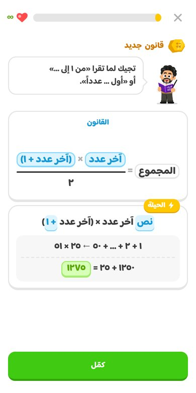
بطاقة «الحيلة»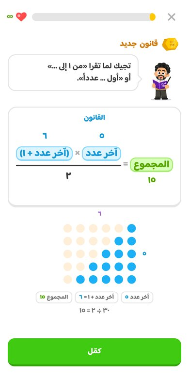
رسمة الإثباتمجموع الزوجية
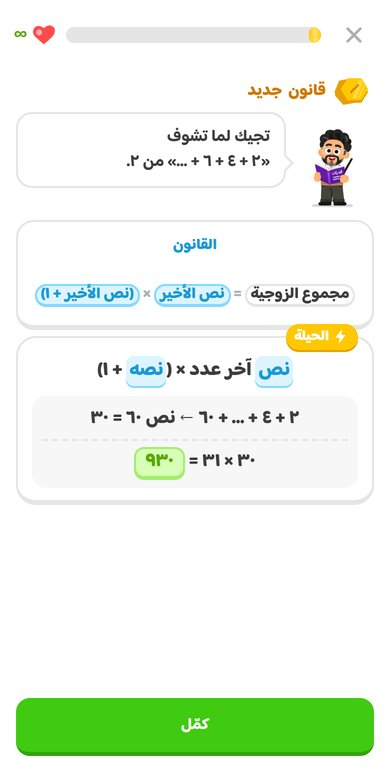
بطاقة «الحيلة»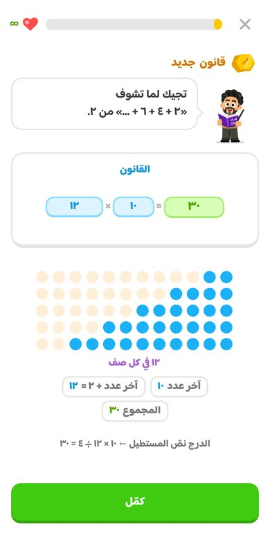
رسمة الإثباتمجموع الفردية
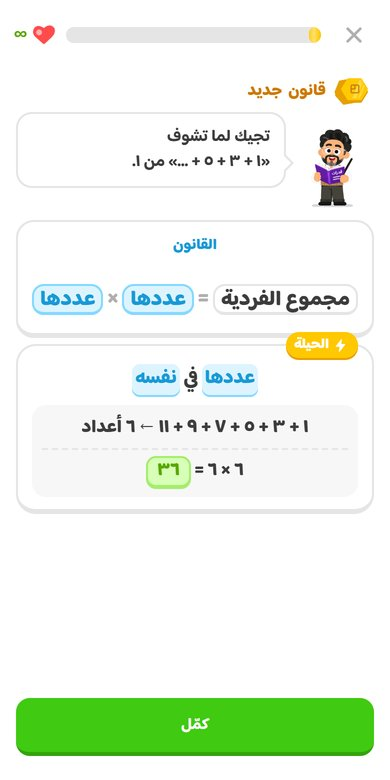
بطاقة «الحيلة»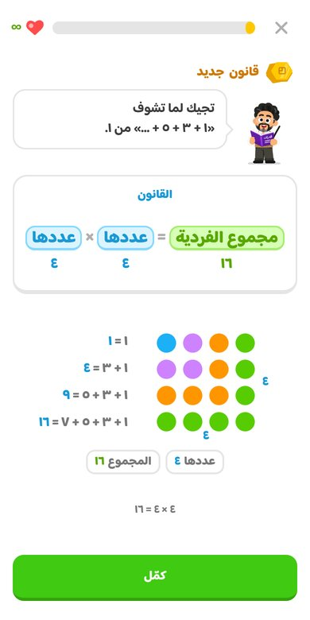
رسمة الإثباتالفردية ناقص الزوجية
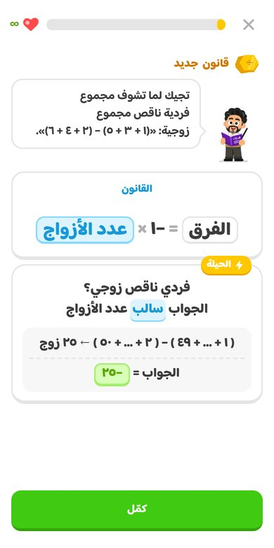
بطاقة «الحيلة»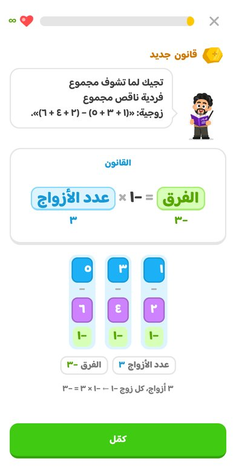
رسمة الإثباتآحاد الضرب
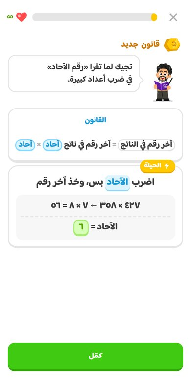
بطاقة «الحيلة»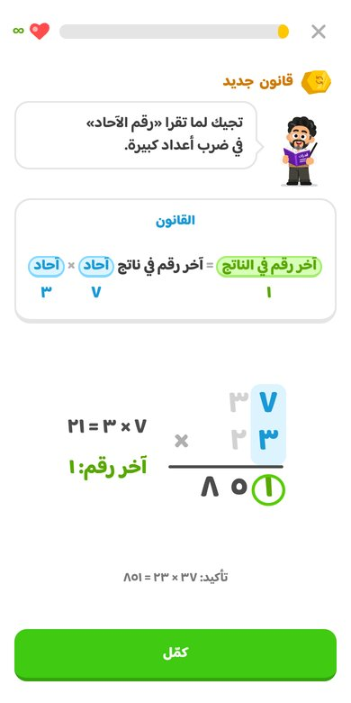
رسمة الإثباتالزيادة الأكبر
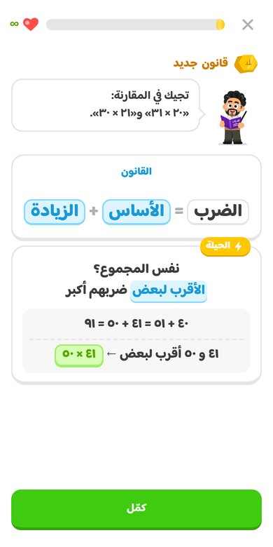
بطاقة «الحيلة»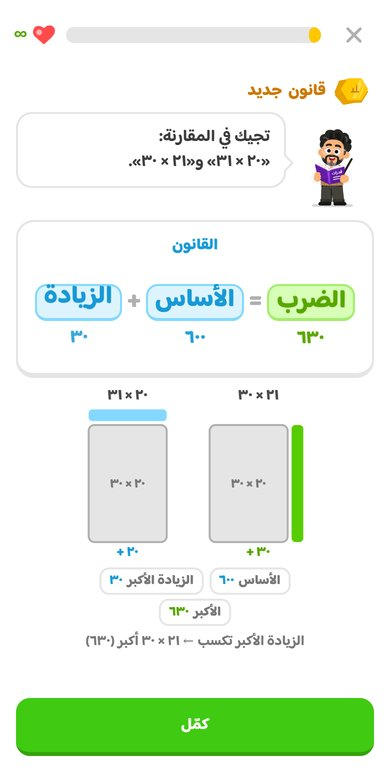
رسمة الإثباتالاحتمال
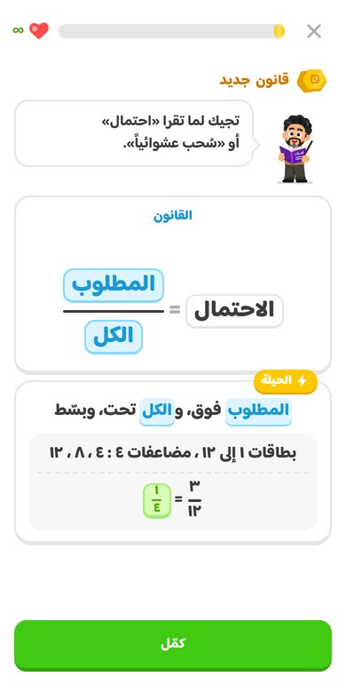
بطاقة «الحيلة»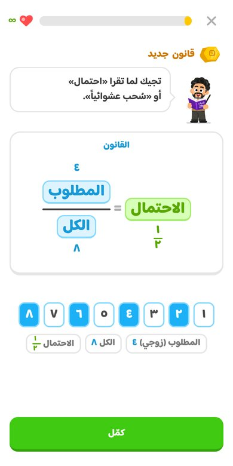
رسمة الإثباتالمصافحات
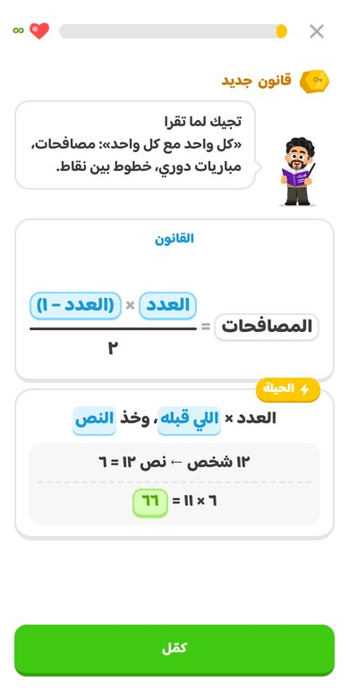
بطاقة «الحيلة»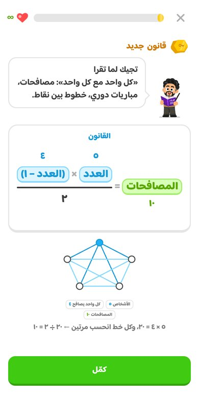
رسمة الإثبات٢. خطوة «آحاد ٤٧ × ٥٨ × ٢٣» صارت سطر واحد
في الموقع مكتوبة على جزأين، و«٦ ، ٦» تنقرا كأنها الرقم العشري «٦،٦». في نسختك: ٧ × ٨ × ٣ ← ☐.
قبل الحل
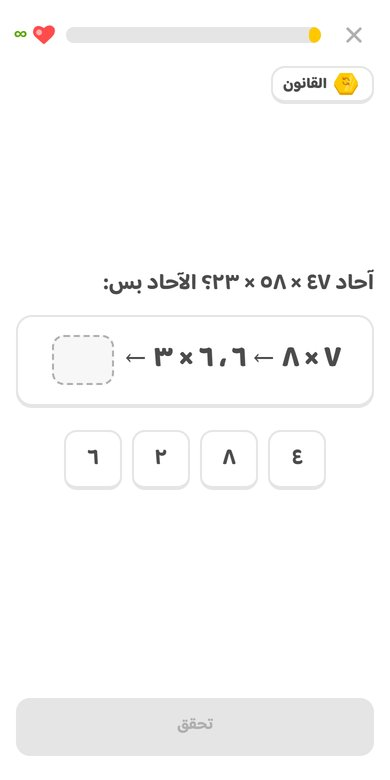
على جزأين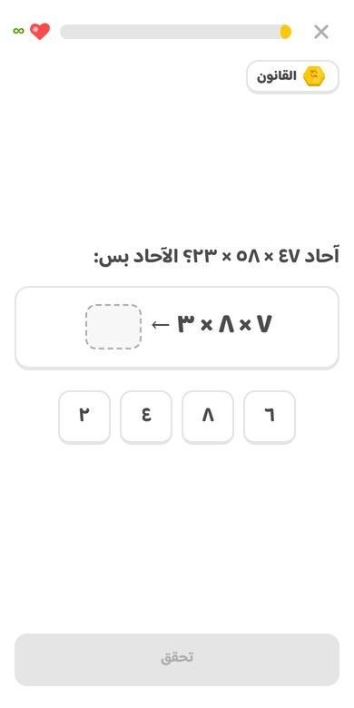
سطر واحدبعد الحل الصح
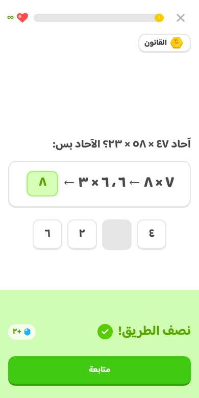
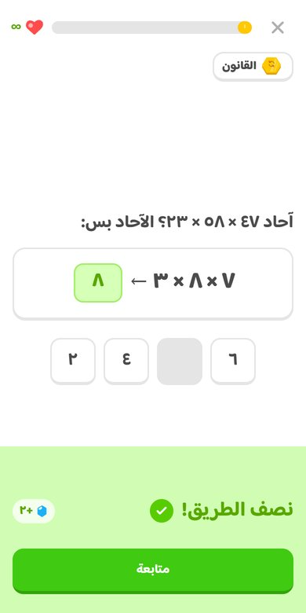
والباقي؟ نفسه
- كل الشاشات الثانية والدروس والأسئلة ما تغيّر فيها شي.
- رقم الإصدار صار ١٠٠ بدل ٩٩، عشان الجوالات اللي عندها التطبيق تنزّل الملفات الجديدة. هذا ما يبين على الشاشة.
- نسختك لسا ما انرفعت للموقع.